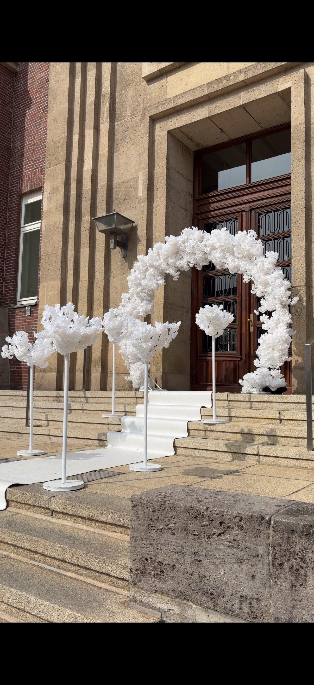
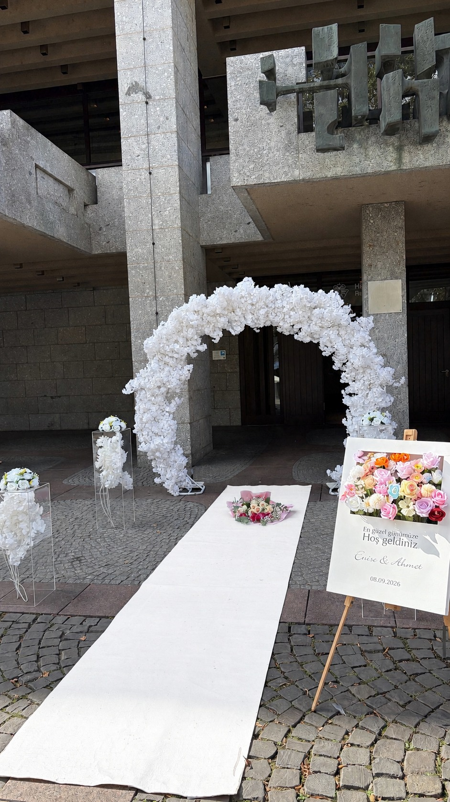
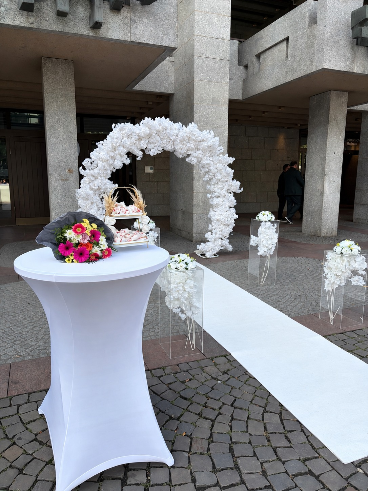
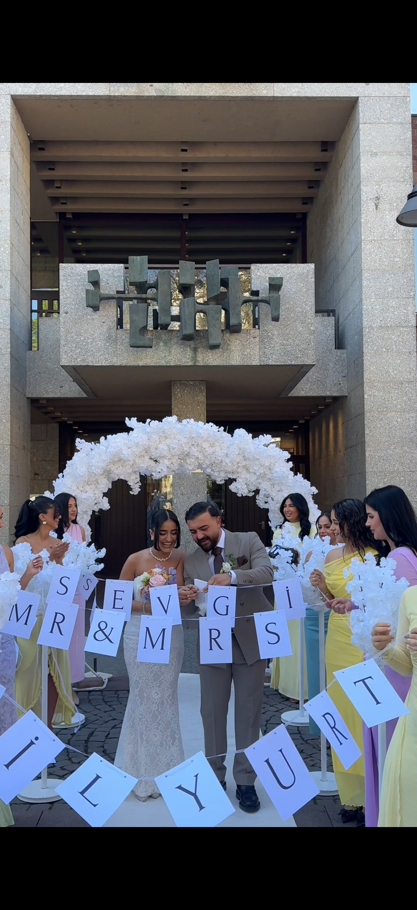
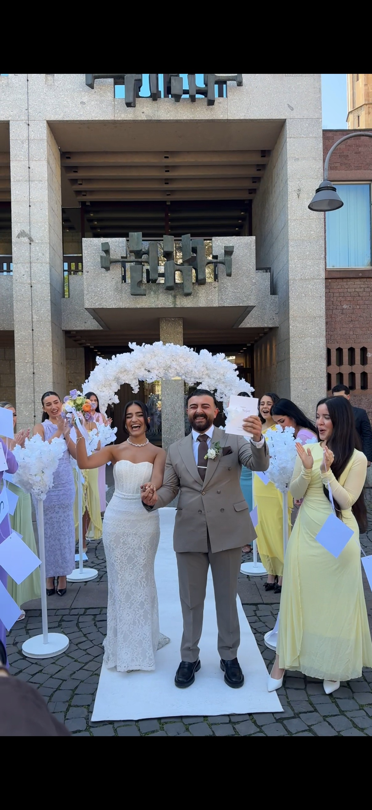

Eindrücke unserer Standesamt-Setups
Festliche Akzente für das Standesamt, den Schlosshof oder die Freitreppe Ihrer Wunsch-Location.

Grand Portal Blossom Arch
Opulenter weißer Kirschblütenbogen mit flankierenden Blütenbäumen und weißem Teppichläufer für den königlichen Auszug auf der Freitreppe.

White Carpet Reception Aisle
Weißer Teppichläufer auf Kopfsteinpflaster, gesäumt von eleganten Acrylsäulen, üppigen Blumenarrangements und Staffelei-Willkommensschild.

Sweet Favor & Toast Table
Stilvoller Stehtisch mit bodenlanger weißer Husse, mehrstöckiger Etagere für Gastgeschenke und farblich abgestimmtem Blumenbouquet.

Just Married Bubble Celebration
Emotionaler Auszugsmoment beim feierlichen Zerschneiden des Just-Married-Ballons, umgeben von schwebenden Seifenblasen und Blütenpracht.

Ribbon Cutting Ceremony
Zeremonielles Durchschneiden des Bandes im Kreis der liebsten Brautjungfern und Gäste direkt vor dem floral geschmückten Portalbogen.

Golden Marriage Certificate Moment
Strahlendes Brautpaar mit dem Stammbuch der Familie vor dem prachtvollen weißen Rosen- und Blütenbogen für das perfekte Hochzeitsfoto.